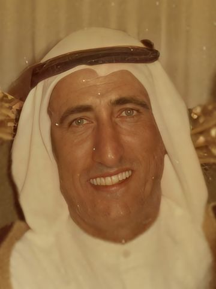

Naser Abdulwahab Al-Qatami
1920 to 1995
Life in brief
Nakhuda Naser bin Abdulwahab Al-Qatami was born in 1920 and trained aboard Al-Badri under his brother Bader, then commanded her on the East African coast. His logbook records thirteen voyages under his command between 1939 and 1951, after which he left the sea, though he stayed close to his crew all his life. Street 103 in Nuzha carries his name. He died on 23 March 1995.
Life facts
- Born
- 1920, as his son Faisal and the family record it. Dr Al-Hijji’s «aged about 76» at his death is only approximate, Kuwait City
- Died
- 23 March 1995, aged about 76 (Al-Hajji, Nawakhdhat Al-Safar Al-Shirai, p. 79), Kuwait
- Street
- Street 103 in Block 3, Nuzha, carries his name. Cabinet Resolution 536 of 6 July 2009 named it after him, and the Capital Municipal Committee approved it (Al-Rai and Al-Jarida, 2009; Al-Anba, 6 December 2010)
- Logbook
- His logbook, edited by Dr Yacoub Yousef Al-Hijji and published by the Center for Research and Kuwaiti Studies in 2002, records 13 voyages under his command. The first set out on 22 October 1939 and the last ended on 20 December 1951, after which he gave up the sea (Center for Research and Kuwaiti Studies catalogue; Selected Research from Kuwait History, 2005, page 83, copy on Kazima)
- Stories
- His brother Bader told Dr Yacoub Al-Hijji that Naser said: «The sea never occurred to me; I have no appetite to sail again.» Yet, Al-Hijji writes, Naser was always proud of his crew and kept up his ties with them until his death (Yacoub Y. Al-Hijji, Maritime Folklore of Kuwait, 2021, page 47)
- Public life
- Honoured as Nakhuda Naser Abdulwahab Al-Qatami at the opening of Al-Khairan resort, February 1987, seated first from the right
Family
- Father
- Abdulwahab Abdulaziz Al-Qatami
- Mother
- Mariam Khalifa Al-Ghanim
- Spouse
- Taiba Al-Barjas
- Children
- Aisha Naser Al-Qatami, Faisal Naser Al-Qatami, Mohammed Naser Abdulwahab Al-Qatami